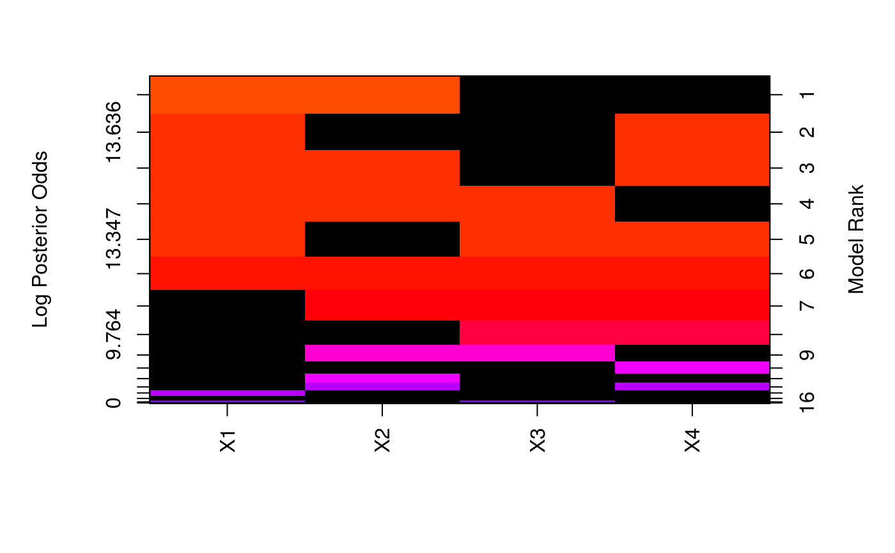

Creates an image of the models selected using bas.
# S3 method for bas image(x, top.models = 20, intensity = TRUE, prob = TRUE, log = TRUE, rotate = TRUE, color = "rainbow", subset = NULL, drop.always.included = FALSE, offset = 0.75, digits = 3, vlas = 2, plas = 0, rlas = 0, ...)
| x | A BMA object of type 'bas' created by BAS |
|---|---|
| top.models | Number of the top ranked models to plot |
| intensity | Logical variable, when TRUE image intensity is proportional to the probability or log(probability) of the model, when FALSE, intensity is binary indicating just presence (light) or absence (dark) of a variable. |
| prob | Logical variable for whether the area in the image for each model should be proportional to the posterior probability (or log probability) of the model (TRUE) or with equal area (FALSE). |
| log | Logical variable indicating whether the intensities should be based on log posterior odds (TRUE) or posterior probabilities (FALSE). The log of the posterior odds is for comparing the each model to the worst model in the top.models. |
| rotate | Should the image of models be rotated so that models are on the y-axis and variables are on the x-axis (TRUE) |
| color | The color scheme for image intensities. The value "rainbow" uses the rainbow palette. The value "blackandwhite" produces a black and white image (greyscale image) |
| subset | indices of variables to include/exclude in plot |
| drop.always.included | logical variable to drop variables that are always forced into the model. FALSE by default. |
| offset | numeric value to add to intensity |
| digits | number of digits in posterior probabilities to keep |
| vlas | las parameter for placing variable names; see par |
| plas | las parameter for posterior probability axis |
| rlas | las parameter for model ranks |
| ... | Other parameters to be passed to the |
Creates an image of the model space sampled using bas. If a
subset of the top models are plotted, then probabilities are renormalized
over the subset.
Suggestion to allow area of models be proportional to posterior probability due to Thomas Lumley
Clyde, M. (1999) Bayesian Model Averaging and Model Search Strategies (with discussion). In Bayesian Statistics 6. J.M. Bernardo, A.P. Dawid, J.O. Berger, and A.F.M. Smith eds. Oxford University Press, pages 157-185.
bas
Other bas methods: BAS, bas.lm,
coef.bas, confint.coef.bas,
confint.pred.bas,
diagnostics, fitted.bas,
force.heredity.bas,
predict.basglm, predict.bas,
summary.bas, update.bas,
variable.names.pred.bas
Other bas plots: plot.bas,
plot.coef.bas
require(graphics) data("Hald") hald.ZSprior <- bas.lm(Y ~ ., data = Hald, prior = "ZS-null") image(hald.ZSprior, drop.always.included = TRUE) # drop the intercept